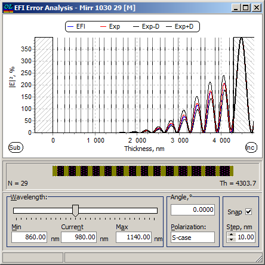

Electric Field Error Analysis
Electric Field Error Analysis
Navigation: OptiLayer Menu Commands > Analysis Menu > Errors Analysis >
Electric Field Error Analysis
` <color_error_analysis.html>`__ ` <idh_error_analysis.html>`__ ` <integral_values_error_analysis.html>`__
If EFI Error Analysis is selected in the Error Analysis Characteristics dialog, then an additional EFI Error Analysis window is displayed.

In this window, the theoretical squared modulus of the amplitude of the electric field is represented, along with its mathematical expectation and error corridor.